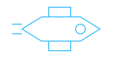
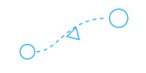

Cabin, solar panels and propulsion
ORION-X
Our spacecraft concept brings the crew, passenger cabins and flight systems
together in one vehicle designed for journeys beyond Earth.
- Private cabins and a shared observation area
- Solar panels to support onboard power
- Separate crew and passenger spaces
Air and water recycling loop
LIFECORE
A life-support concept that manages the cabin environment so passengers
can focus on the journey.
- Air filtration and oxygen monitoring
- Water recycling
- Cabin temperature control

Route planning between destinations
NAVIGATE AI
A navigation assistant that helps the crew plan routes and track the
spacecraft's position. The crew stays in control.
- Route planning and course updates
- Obstacle alerts for the crew
- Manual navigation backup
Layered shielding around the cabin
ASTRA SHIELD
A protection concept combining cabin shielding, radiation monitoring
and a sheltered area for periods of increased solar activity.
- Layers around occupied spaces
- Radiation sensors and crew alerts
- A dedicated storm shelter